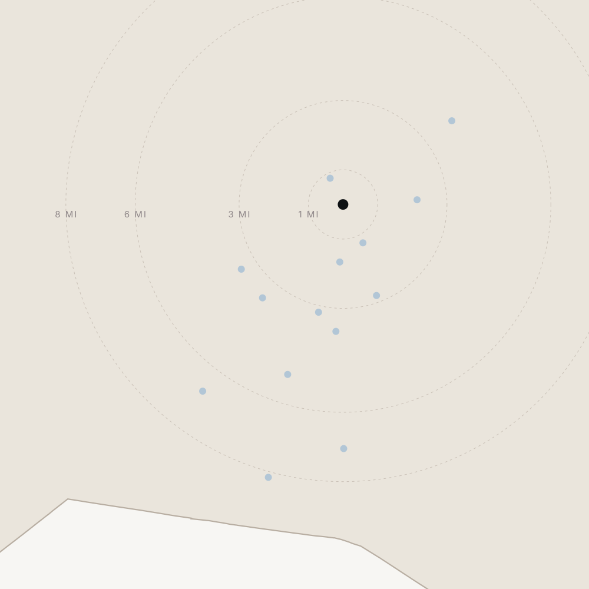

312 Madison Street · Direct Mail Distribution Strategy
Five hundred households who read a building, not a lot size.
Property
312 Madison St, Nashville, Tennessee 37208 · Historic Germantown
Prepared For
Alex Brandau IV · Aperture Global Real Estate
Channel
Direct Mail · 500 pieces, single drop
Package
Diamond Black
Apertureglobal.com
The Geography
Ten thousand square feet, one mile from downtown.
That is the whole argument, and it draws the footprint tight rather than wide. A house of this size and specification almost always sits on acreage forty minutes out. This one sits in Historic Germantown, inside Davidson County, a little over a mile from the downtown core, with skyline views off its own decks. So the mail is not sent outward to find money in the suburbs. It is sent across a compact set of Nashville neighbourhoods where buyers already choose to live in the city and already pay for architecture.

312 Madison St
Salemtown
Downtown Core
The Gulch
East Nashville
Inglewood
Wedgewood-Houston
12South
Belmont-Hillsboro
Sylvan Park
Richland-West End
Green Hills
Belle Meade
Forest Hills
Oak Hill
The Property
Mailing Market
Shaded: Davidson County
MarketMilesTier
Salemtown0.801
Downtown Core1.204
The Gulch1.704
East Nashville2.102
Wedgewood‑Houston2.802
Belmont‑Hillsboro3.202
Sylvan Park3.502
Richland–West End3.603
12South3.702
Inglewood4.002
Green Hills5.203
Belle Meade6.703
Oak Hill7.003
Forest Hills8.203
Brentwood9.9—
Franklin17.9—
Straight‑line miles,
computed from
coordinates. Brentwood
and Franklin sit in
Williamson County
and are excluded.
A precision list, not a volume play. Mail fewer, mail better, track response by market. Fourteen of the sixteen markets above sit within nine miles of your front door, and the two that do not are excluded. County confirmed as Davidson from the property’s own coordinates, not from its postcode.
Who This Is For
Concrete and steel change the list.
A conventional pull at seven and a half million sorts Middle Tennessee by assessed value and mails the top of it. That list would be wrong here, and it would be wrong in a specific direction: it returns large-lot suburban estates, and the household that bought one of those has already declined the city. What is for sale is a Nick Dryden building — commercial-grade concrete and steel, three levels on an elevator, ten thousand square feet on an urban parcel in Historic Germantown. The buyer is identified by how they read a building, not by how many acres they hold.
A Value‑Ranked List Finds
Large-lot estates in Williamson County
Gated golf communities thirty minutes out
Traditional builder product at scale
Households who moved out of the city on purpose
People for whom an urban parcel is a compromise
The Signals We Rank On Instead
Already owns inside the urban core
Owner-occupied condominium at a high value
Design, music, hospitality and medical occupations
Top of a walkable neighbourhood, not of a county
Long tenure in a neighbourhood that has outgrown them
The Markets We Deliberately Leave Out
Brentwood and Franklin are the obvious omissions, and they are omitted on purpose. Both hold households at and above this price, and both are ten and eighteen miles out in Williamson County. A household that chose an acre in Franklin has already made the trade this property asks them to reverse. The same reasoning removes Nolensville, Arrington and the lake communities. It is not a question of capacity; it is a question of whether the address is the point. Here it is.
What The List Is Being Asked To Recognise
10,024
Square feet, on an
urban parcel
3
Levels, served
by elevator
5 & 10
Ensuite bedrooms
and bathrooms
1.2
Miles to the
downtown core
The Footprint
Four audiences, one drop.
The four tiers are not four sizes of the same list. One is asked to produce a conversation — the Germantown neighbour who mentions it over the fence. Two are asked to produce a buyer, from opposite directions: the design-literate urban owner trading up, and the established luxury belt trading across. One is a deliberate bet on the downtown towers, where people have already chosen to live in the middle of the city and have run out of room. They are screened differently because they are doing different work, and reported separately so the difference is visible afterwards.
TierAudienceWhat It Is Asked To DoPieces
01
Germantown & Salemtown
Referral. The neighbours who walk past it daily.
90
02
Architecturally led urban
Purchase. Design buyers at the top of a smaller house.
170
03
Nashville luxury belt
Purchase. Peers at this price, ten minutes away.
160
04
Downtown towers
Purchase. Urban owners who have run out of room.
80
Share Of Delivery · 500 Pieces Total
01
90 · 18%
02
170 · 34%
03
160 · 32%
04
80 · 16%
Why Five Hundred, And Where It Was Cut
Five hundred pieces in a single drop is the Aperture standard, and five hundred is a tight number at seven and a half million. It only works if the geography is cut rather than thinned. So Williamson County comes out altogether, and so do the lake and satellite markets; the pieces go instead into a thirteen-zip urban footprint where design and tenure can be screened for directly. Every tier here is capped, and the cap is reached by ranking — never by widening the geography until the count fills.
The Ledger
The footprint, zip by zip.
Written out so it can be executed. Each tier is a separate pull with its own screen; all four are then deduplicated against one another before any cap is applied, so no household receives two pieces and no zip is counted twice. Several zips appear in more than one tier — 37208 sits in the neighbourhood radius and in the urban tier, 37203 sits in the urban tier and the towers, 37212 sits in the urban tier and the luxury belt. Where that happens the narrower tier takes the record.
01
Historic Germantown, Salemtown & Hope Gardens
A 1‑mile radius of 36.176062, −86.786338 — 37208, and the carrier routes of 37201 and 37219 that fall inside it
Owner‑occupied only. No value screen and no income screen: inside a one‑mile urban radius a value screen removes exactly the neighbours who host, who talk and who refer. Mailed wide, on purpose.
02
Architecturally Led Urban Nashville
Germantown 37208 · East Nashville 37206, 37216 · Wedgewood‑Houston 37203, 37210 · 12South and Belmont 37204, 37212 · Sylvan Park and The Nations 37209
Qualified on the top of each neighbourhood rather than the top of the county. The value floor is dropped to roughly four tenths of asking, because an architect‑designed house on a city lot in East Nashville assesses well below a comparable-quality estate — and its owner is exactly who trades up into this building.
03
The Nashville Luxury Belt
Belle Meade 37205 · Green Hills 37215 · Forest Hills and Oak Hill 37220 · Richland–West End 37212
Banded tightly around your asking price. Owner‑occupied, single family and condominium, five years and over in residence. The conventional tier, held to four zips and kept inside Davidson County.
04
The Downtown Towers
Downtown and SoBro 37201, 37219 · The Gulch and Midtown 37203
Condominium only, owner‑occupied, banded at the top of the tower market. The single tier where property type does most of the work: a household paying tower prices for eighteen hundred square feet has already bought the location and is short only the house. Held to three zips and the smallest count of the four.
Thirteen Zips, One County
Every zip in all four tiers falls inside Davidson County, Tennessee — confirmed by resolving the property’s coordinates against the federal county boundary rather than by reading its postcode.
Qualification
Banded on price, not floored.
Three value bands, because the three purchase tiers are looking for three different things. All of them are arithmetic on your asking price of $7,495,000, and all of them share the same ceiling: one and six tenths of asking, or $12,000,000. What changes between them is the floor.
Tier 03 · Nashville Luxury Belt — 0.6× to 1.6×
Tier 04 · Downtown Towers — 0.5× to 1.6×
Tier 02 · Architecturally Led Urban — 0.4× to 1.6×
$0
$3M
List $7,495,000
$12M
$15M
An open threshold of five million and above would look generous and behave badly: it pulls in every estate far above this one, households that will never trade down into a city parcel in Germantown. Bracketing keeps the list to people for whom this is a lateral move or a step up. The urban floor sits lower for one reason — per square foot, an architecturally significant house in East Nashville or 12South prices below a traditional estate of the same calibre, so a belt-level floor would screen out the most design-literate households on the list.
Applied Everywhere
Owner‑occupied only. Single family and condominium only. Household income above $250,000, the top band available. Length of residence five years and over on all three purchase tiers.
Left Open On Purpose
No value or income screen inside Tier 01. No age or household‑composition screen anywhere. No renters and no absentee owners. No out‑of‑state addresses in this channel — that is the digital campaign’s work.
Why The Ceiling Is Shared
One ceiling, three floors. The ceiling is the same across all three purchase tiers because it answers a single question — above $12,000,000 a household is not trading into this building from anywhere. The floors differ because the same calibre of house carries a different assessed value in Belle Meade, in a downtown tower and on a city lot in East Nashville, and a single floor would quietly delete one of those audiences.
The List Pull
The pull, as it will be run.
Written for whoever sits down to execute it in Melissa. Selects are per tier; the suppression, the appends and the ranking rule are common to all four.
TierSelectValue
01
Geography
Property
Occupancy
Screens
Cap
Radius 1 mi of 36.176062, −86.786338; 37208 entire, plus the carrier routes of 37201 and 37219 inside the radius
Single family, condominium
Owner‑occupied
None — no value, income or residence screen
90, ranked by length of residence descending
02
Geography
Property
Occupancy
Screens
Cap
37208, 37206, 37216, 37203, 37210, 37204, 37212, 37209
Single family, condominium
Owner‑occupied
Estimated home value $3,000,000 to $12,000,000 — AND household income above $250,000 — AND length of residence 5 years and over
170, ranked by residence then value, descending
03
Geography
Property
Occupancy
Screens
Cap
37205, 37215, 37220, 37212
Single family, condominium
Owner‑occupied
Estimated home value $4,500,000 to $12,000,000; household income above $250,000; length of residence 5 years and over
160, ranked by residence then value, descending
04
Geography
Property
Occupancy
Screens
Cap
37201, 37219, 37203
Condominium only
Owner‑occupied
Estimated home value $3,750,000 to $12,000,000; household income above $250,000; length of residence 5 years and over
80, ranked by residence then value, descending
Suppression — Applied Before Any Cap
Suppress 312 Madison Street and every adjoining parcel, so this household does not receive its own mailing — the subject property sits inside the Tier 01 radius by definition. Suppress the listing agent’s own address. Suppress the Aperture Global office address. Then deduplicate the four tiers against one another, and only then apply the caps.
Appends On Every Record
Occupation detail, property type, income rank, purchase amount range and length of residence — so response can be segmented after the fact rather than guessed at. Add a tier code at export; it is what makes per‑market reporting possible at all.
The Ranking Is The Decision
These pulls over‑return heavily — a single affluent Nashville zip will commonly hand back two thousand records against a target of a hundred and sixty. The thresholds define the pool; the sort selects the list. It is specified above and is not left to the operator.
What Happens Next
Mail fewer, mail better.
The strategy is settled: five hundred pieces, four tiers, one drop, weighted to the households who already live in the city and already pay for architecture. What follows is the order of work, and the two items that are matters of scheduling and sign-off rather than judgement.
The Footprint
Set. Four tiers, weighted 90 / 170 / 160 / 80, with half the delivery on the two tiers that read the building rather than the price. Thirteen zips, all inside Davidson County. Williamson County, the lake markets and everything beyond nine miles are excluded.
The Bands
Set. Derived from $7,495,000 — a shared ceiling of $12,000,000 at 1.6×, with floors of 0.6×, 0.5× and 0.4× across the belt, the towers and the urban tier. If the price moves, the bands are re-derived from the new figure rather than rescaled.
The List
Pulled to the specification on the previous page. Suppressed against 312 Madison Street and every adjoining parcel, and against the agent and office addresses; deduplicated across all four tiers; then capped by ranking, not by widening. Tier codes travel with the export so response is read market by market.
The Piece
A 6 × 10.5 in oversized card. The image that carries this property is the building itself — the concrete and steel elevation, the courtyard and the skyline off the upper deck — and that needs a format wide enough to hold an architectural photograph at legible scale. You will see the artwork and approve it before it runs.
The Drop Date
Open only because it is scheduling. Fixed against print and list lead times inside the thirty‑day campaign flight, and confirmed to you once the pull returns.
Your Agent
Alex Brandau IV
Aperture Global Real Estate